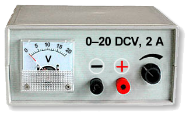
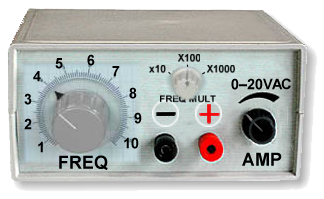
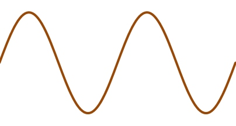
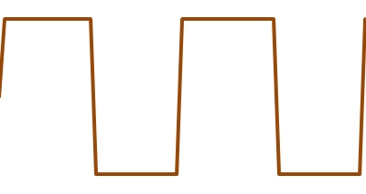
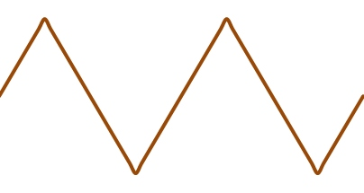
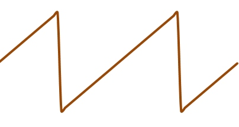
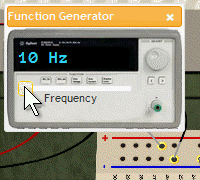

Using a Function Generator
|
 a. DC power supply |
|
 b. AC power supply |
| Figure 1. Comparing DC and AC power supplies |
You know how a typical DC power supply provides a variable voltage source for DC circuits. A simple turn of a knob adjusts the output voltage. See Figure 1a.
In a similar way, a function generator is an AC power supply for AC circuits. See Figure 1b. A function generator provides a variable voltage source (or amplitude), but it also can vary the frequency, measured in Hertz, or cycles per second.
Many function generators can also change the shape of the alternating voltage signal. The most common shape is the sine wave. But you may also find buttons that will yield other wave forms. Figure 2 shows some typical choices. You can see the shapes of these signals with an oscilloscope.
|
 a. Sine wave |
 b. Square wave |
 c. Triangle wave |
 d. Sawtooth wave |
| Figure 2. Different types of waves from a function generator | |||
|
 Figure 3. Change frequency with the SPARKS function generator |
We made the function generator for SPARKS very simple.
- It produces only one amplitude (peak voltage).
- It produces only one type of AC: a sine wave.
- You can change the frequency of the signal by moving the slider with your mouse, as shown in Figure 3.
You will measure the AC voltage amplitude, but the digital display shows the frequency.